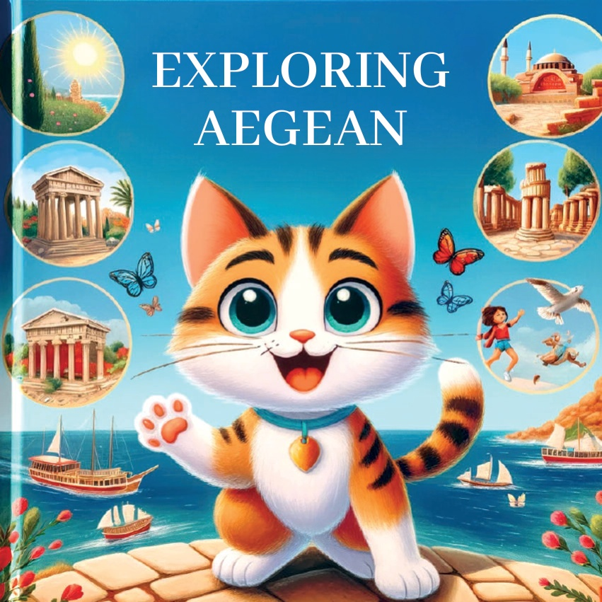
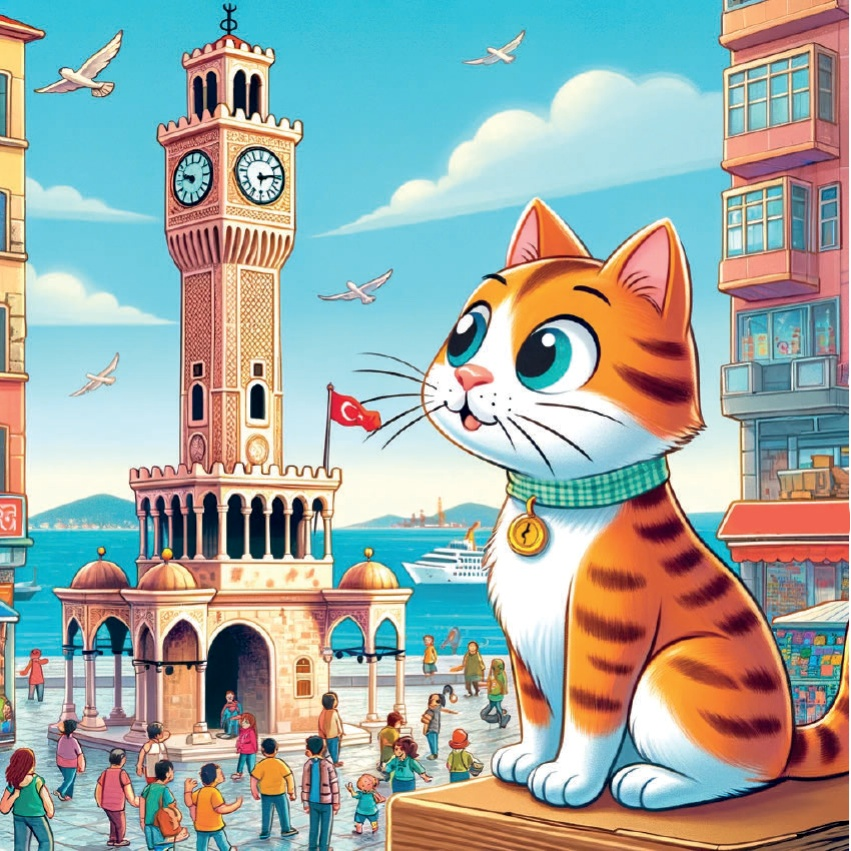
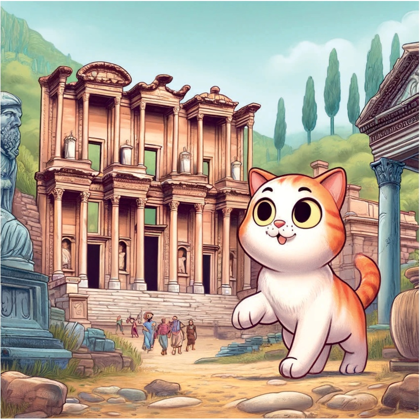
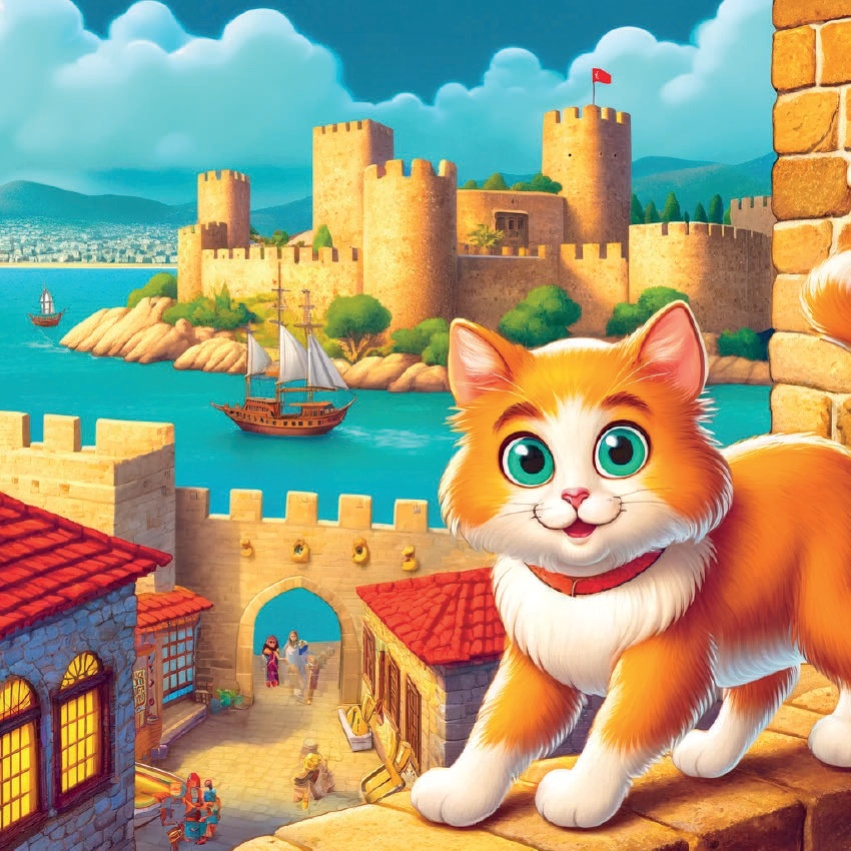
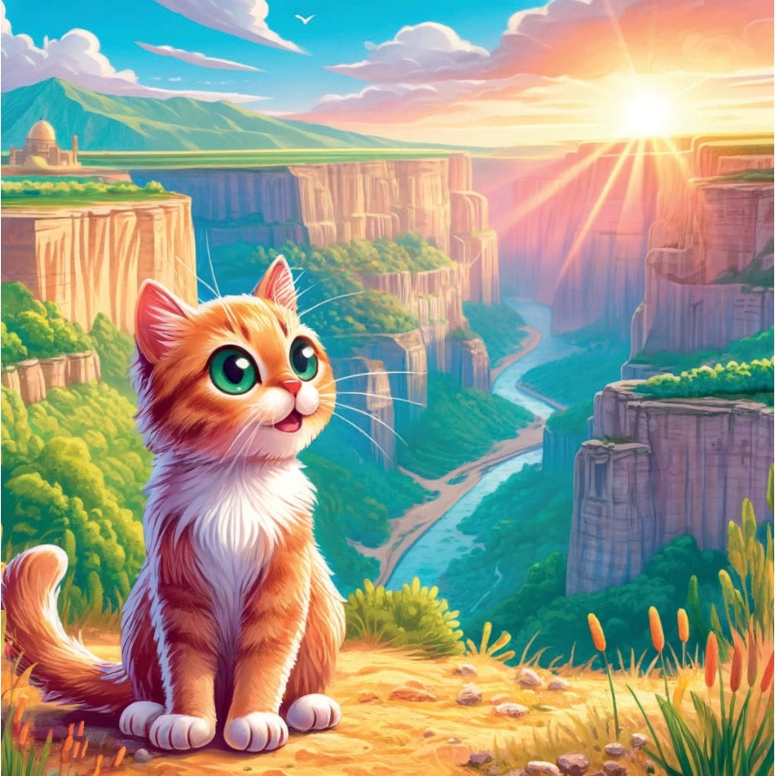

1

2

3
从前，
有一只名叫卡拉梅尔的好奇的小猫，
她喜欢探索不同的地区。
有一天，她决定穿越土耳其的爱琴海地区，
去了解那里独特的文化、历史和自然美景。
4
5
伊兹密尔：
时钟塔
卡拉梅尔的第一个目的地是伊兹密尔，
她在科纳克广场欣赏了著名的
时钟塔。
优雅的设计和
充满活力的氛围让她感到宾至如归。
6

7
伊兹密尔：
古城以弗所
接下来，卡拉梅尔前往了伊兹密尔，
在那里她探索了古城以弗所。
她惊叹于这座古老都市的宏伟遗址
和丰富的历史。
8

9
穆拉：
博德鲁姆城堡
在穆拉，卡拉梅尔参观了令人印象深刻的博德鲁姆城堡。
她了解了它的历史意义，并欣赏了海岸线的壮丽景色。
10

11
丹尼兹利：
帕慕克莱
卡拉梅尔随后前往丹尼兹利，
在那里惊叹于帕慕克莱的自然奇观。
白色的露台和温泉池
是她从未见过的景象。
12
13
马尼萨：
斯皮尔山
在马尼萨，卡拉梅尔发现了斯皮尔山的 아름다움。
她喜欢穿梭于茂密的森林，欣赏沿途的野花。
14
15
Balıkesir：
Ayvalık
卡拉梅尔的下一个目的地是
Balıkesir的Ayvalık，她在那里探索了
迷人的老城区和附近的岛屿。
鹅卵石街道
和传统的房屋非常迷人。
16
17
uşak：
乌鲁贝峡谷
在uşak，卡拉梅尔参观了
令人叹为观止的乌鲁贝峡谷。
戏剧性的悬崖和迷人的景色使它
成为她旅程中难忘的一部分。
18

19
心中充满了新的经历和回忆，卡拉梅尔意识到爱琴海地区是多么的多样和美丽。她回到家，梦想着下一次冒险。
20
21
22